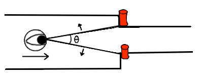

Pottow's Place
Thesis Project
My thesis was a driving simulation experiment made in Unity. It tested time-to-collision (TTC) theories and steering laws, when approaching gates of variable width. The time it took each participant to complete the course was modelled using Accot and Zhai's Steering Law. The changing angle between the left gatepost, the driver's eyeline, and the right gatepost at each instant was used as input for David Lee's TTC theory.
The trial consisted of a total of fourty four very similar levels. The driver had to navigate an unruly car through a straight track. The levels could be seperated into three types, no obstacles, one gate, and five gates. To create different variations on these three level types, the width of the track and gates were altered randomly in width.
The speed, time, braking, and visual angle to the gate, at each instant, was recorded for each participant. This data allowed us to compare how similar linear tracks could yield different travel times, despite having equivalent difficulty values according to the Steering Law.
 The TTC section of the experiment used the visual angle between the driver and the gates to assess whether people react to a gate or opening in the same way that they would react to being on a collision course with a physical obstacle. The aim was to analyse whether their braking pattern when approaching the gate was comparable to the expected approach towards a physical obstacle like a wall.Discord Music Bot
Botress is a bot for playing music over voice chat on Discord. It was coded in python using the discord.py API. The bot is controlled via a GUI on the host's computer. Playlists/genres can be selected from a directory and played on shuffle.